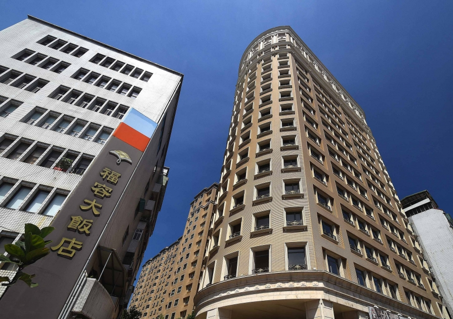
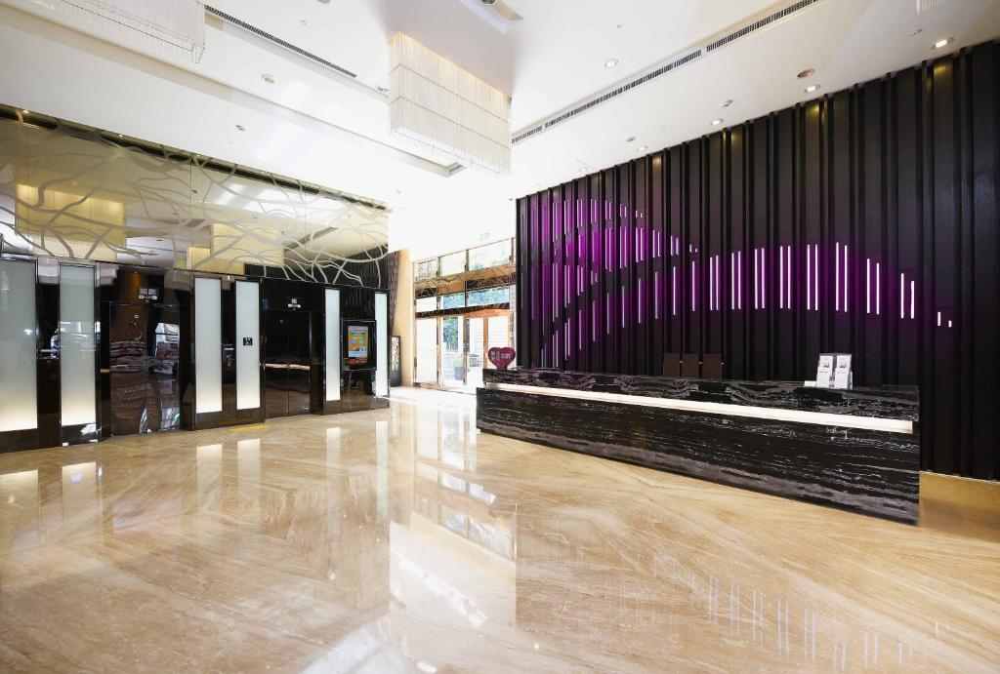

Fullon Hotel Shengkeng: Hotel ramah segala usia Nama Hotel: Fullon Hotel Shengkeng Alamat: No. 236, Sec. 3, Beishen Rd., Shengkeng Dist., New Taipei City Telp: (02)2662-0088 Tahun Berdiri: 2010 Nama Pemilik: Lih Pao Construction Rating: Bintang 4 Hotel ini terletak di kota Taipei. Terdapat beberapa destinasi menarik di Taipei seperti kebun binatang Taipei dan Taipei 101. Taipei merupakan kota yang modern namun tetap tidak lepas dengan unsur-unsur budaya Tionghoa. Banyak orang datang berlibur ke Taipei pada musim semi pada bulan Maret hingga Juni karena saat musim semi hawanya sejuk. Taipei memiliki suasana perkotaan yang modern dan terdapat Gedung Taipei 101 yang sangat menjadi pusat perhatian para wisatawan. 1 NTD setara dengan sekitar Rp. 500 yang bisa berubah seiring berjalannya waktu. Hotel ini bernama Fullon Hotel Shengkeng yang berada di Distrik Shengkeng kota Taipei. Hotel ini memiliki 19 lantai dengan total 317 kamar. Hotel ini memiliki fasilitas yang cukup lengkap, dimana terdapat gym, kolam renang, dan restoran. Hotel ini memiliki lokasi yang cukup strategis karena berada tidak jauh dari tempat-tempat yang menarik banyak wisatawan. Hotel Fullon Shengkeng terletak 9 km dari Distrik Xinyi, 5 km dari kebun binatang Taipei, dan 8 km dari Taipei 101. Harga hotel ini berkisaran dari Rp. 1.115.000 sampai Rp. 1.574.000 tergantung pada tipe kamarnya dan promo yang berlaku. Tempatnya lumayan bagus dan ramah anak karena memiliki tema yang lucu. Kamarnya cukup bagus. Pelayanannya sangat baik. Restorannya lumayan bersih, makanannya lumayan enak dan bervariasi. Kamarnya memiliki pintu kamar mandi yang kondisinya sudah kurang baik. Keamanannya cukup terjaga karena untuk menaiki lift harus menggunakan kartu kamar. Hotel ini mirip dengan hotel Tao Garden. Kamarnya lumayan mirip satu sama lain yang membedakan adalah fasilitasnya. Fullon hotel memiliki fasilitas yang lebih lengkap. Meski memiliki cukup banyak kelebihan tetapi hotel ini juga memiliki beberapa kekurangan. Kebanyakan staff di hotel ini tidak fasih berbahasa Inggris, hanya petugas resepsionis yang kebanyakan bisa berbahasa Inggris. Kekurangan yang saya temukan pada kamar hotel saya adalah pintu toilet kamar memiliki kondisi yang kurang baik. Pintu kamar mandinya tidak mengunci dan tidak tertutup rapat. Hotel ini merupakan hotel ramah segala umur dengan kamar yang mewah dan makanan yang lezat dan bervariasi serta fasilitas yang lengkap. Hotel ini juga menyediakan pelayanan yang baik dan menciptakan suasana yang nyaman bagi para pengunjung. Hotel ini saya rekomendasikan untuk wisatawan yang ingin mengunjungi kota Taipei dan ingin mengunjungi ikon-ikon kota Taipei. Hotel ini saya rekomendasikan untuk segala umur bahkan untuk orangtua yang ingin membawa anaknya menginap. |
 |  |